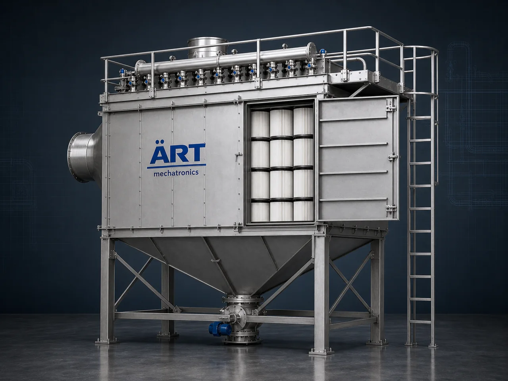

Pleated Dust Collector Machine (Pleated Filter Dust Collection System for High-Efficiency Filtration)
A Pleated Dust Collector Machine, also known as a Pleated Filter Dust Collector or Pleated Bag Filter System, is an advanced industrial air pollution control system designed for high-efficiency dust filtration using pleated filter media with increased surface area.

About the Pleated Dust Collector Machine
Compared to conventional bag filters, pleated filters provide higher filtration efficiency, compact design, and longer service life, making them ideal for industries dealing with fine dust and high-performance air filtration requirements.
Pleated dust collectors are widely used in pharmaceutical, food processing, powder handling, chemical, electronics, plastics, and high-precision manufacturing industries, where clean air and fine particle control are critical.
ART Mechatronics offers state-of-the-art pleated dust collectors, engineered for maximum efficiency, compact installation, and superior dust removal performance.
One machine, many names
Buyers search for this equipment under many terms — we manufacture all of them:
Working Principle of Pleated Dust Collector
Dust-filled air enters through:
Air passes through pleated filter media:
More surface area = better efficiency
Compressed air pulses:
Dust is collected in:
Filtered air is safely released or recirculated.
Types of Pleated Dust Collectors
Pleated Filter Vs Bag Filter
Feature Pleated Filter Conventional Bag Filter Surface Area High Moderate Efficiency Very High High Space Requirement Compact Larger Maintenance Low Moderate Filter Life Longer Standard
Pleated filters = next-generation upgrade
Industries Using Pleated Dust Collectors
💊 Pharma & Healthcare
- Fine powder handling
- Clean room applications
🍃 Food & FMCG Industry
- Spices
- Dairy powder
- Flour mills
⚗️ Chemical & Powder Industry
- Fine chemical processing
💻 Electronics Industry
- Dust-sensitive manufacturing
♻️ Plastic & Polymer Industry
- Fine particles and powders
🏭 General Manufacturing
- High-precision industries
Features & Advantages
- Extremely high filtration efficiency (up to 99.9%)
- Higher surface area for better dust capture
- Compact and space-saving design
- Longer filter life
- Reduced maintenance cost
- Automatic pulse cleaning system
- Improved air quality and hygiene
- Ideal for fine and hazardous dust
Technical Highlights
- Airflow Capacity: Custom designed
- Filter Type: Pleated Filter Media
- Cleaning Mechanism: Pulse Jet
- Dust Discharge: Hopper / Collection Bin
- Construction: Mild Steel / Stainless Steel
- Automation: PLC-based control (optional)
Turnkey Pleated Dust Collection Solutions
ART Mechatronics offers:
- Complete system design & engineering
- Ducting layout optimization
- Equipment manufacturing
- Installation & commissioning
- Automation integration
- After-sales service & AMC
Why Choose Art Mechatronics
- Expertise in advanced filtration systems
- Customized solutions for fine dust industries
- High-efficiency and compact designs
- Long-lasting and low-maintenance systems
- Proven performance across industries
Applications
- Pharmaceutical Plants
- Food Processing Units
- Chemical Plants
- Electronics Manufacturing
- Powder Processing Units
Get pricing & specs for the Pleated Dust Collector Machine
Share the product, target capacity, current process and plant location. These details help our engineers discuss the right machine or line configuration.
One partner, from design to start-up
ART Mechatronics designs, manufactures, installs and commissions your Pleated Dust Collector Machine solution with regional presence in India, UAE and Thailand.